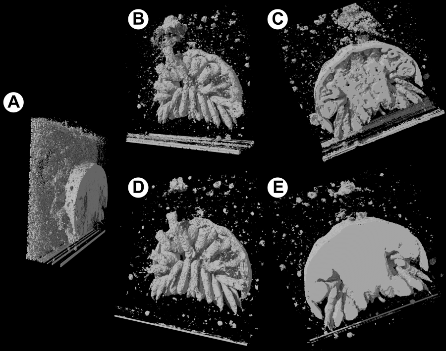
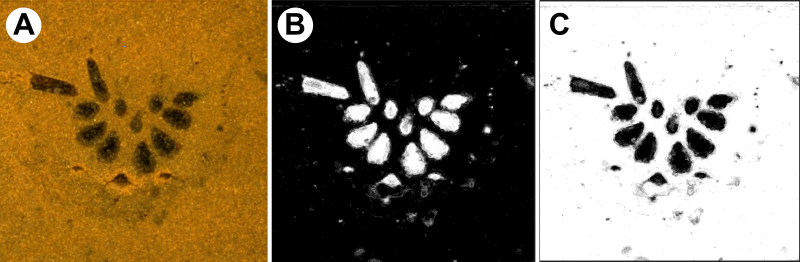
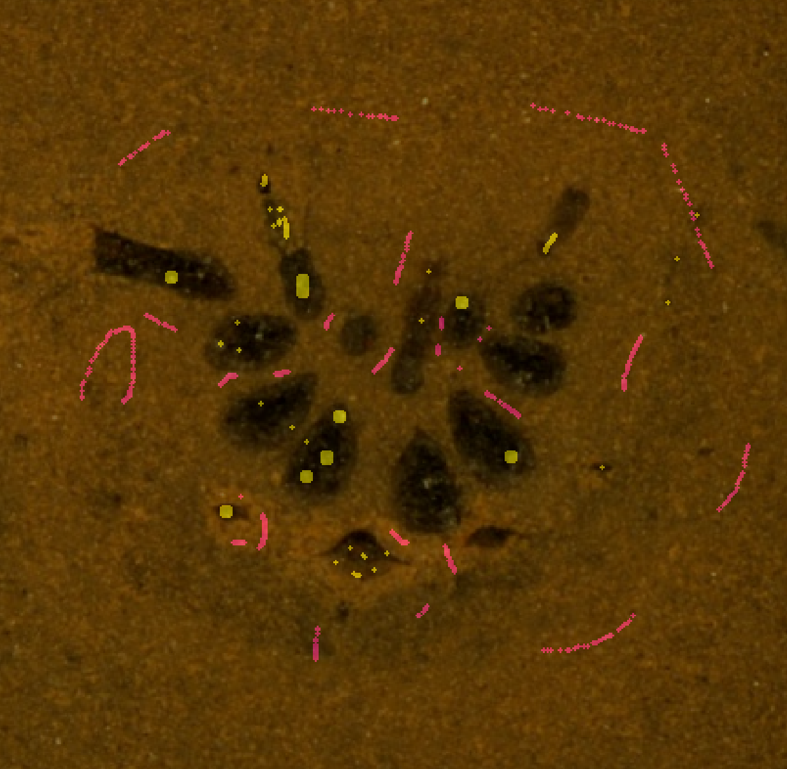
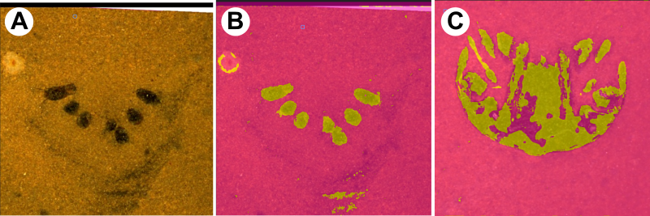

ML generation provides a means to identify structures in datasets using a small training sample of correctly identified pixels. Figure MLG1 shows how the resultant segmentation is typically superior to that achieved by linear generation, and how iterative sample improvement can further refine the model

Figure MLG1. SPIERSview renders of a test dataset segmented using ML. (a) Model created using linear (non-ML) generation - note that brightness variation in slices renders one end of the model noisy. (b), (c) renders after ‘first pass’ ML segmentation, using small sample on three slices, and ‘Complex Colour’ feature presets. Note artefacts at rear of model. (d),(e) Improved renders after iterative improvement of training sample.¶
ML generation uses a machine-learning segmentation approach to determine, on the basis of a training dataset, which pixels in a dataset should be assigned to different segments. For instance, a dataset may contain three identifiable types of material - fossil, matrix and void. In a ML workflow, the user first creates one SPIERSedit segment for each of these material types, then identifies a small set of pixels that can be assigned to each, forming a training sample. The machine learning algorithm then uses this training sample to deduce rules for predicting segments for pixels. These rules are then applied to the rest of the dataset. For each segment, an approximate-probability map is produced for each slice, where light pixels represent a high probability for that segment, and dark pixels represent a low probability (see Figure MLG2). These approximate-probability maps are treated as normal SPIERS working images for each segment, and are combined in the normal SPIERS manner to produce a segment classification for all pixels.

Figure MLG2. Source image (a), and approximate-probability maps for ‘fossil’ (b) and ‘matrix’ (c) segments, produced using ML algorithms.¶
The ML system uses a “random forest” algorithm for prediction; the reader is referred externally for detailed information on this approach. It can operate on both greyscale data (e.g. CT) and colour data (e.g. serial grinding optical photographs). Predictions are based not just on the colour/shade of an individual pixel, but on its context, i.e. the colours/shades of surrounding pixel, both in 2D (within a slice) and in 3D (between slices). The ML system is processor and disk-space intensive; a full ML segmentation of a very large dataset can in some cases take many hours to calculate. Nonetheless for many datasets the ML system will be the quickest way to generate high-quality results from noisy or otherwise difficult data.
NOTE - the ML system was introduced in SPIERSedit version 4. It replaces the older polynomial prediction system implemented in earlier versions of SPIERS.
The ML system is one of the most complex parts of SPIERSedit, and takes experimentation and practice to master. This usage guide cannot document all possible workflows, as the system is deliberately built to be flexible and support many ways of working. Instead, it provides one suggested workflow using an example (colour) dataset, and covers the most frequently encountered considerations and concepts.
1. Create Segments
The ML system requires one SPIERS segment for each material type to be discerned. At least two segments are always required (typically “fossil” and “matrix”). Some datasets may require more than two datasets (there may be more than one phase of fossil material, or the data may include voids that you wish to distinguish from matrix).
The first step in ML generation is always to ensure that the correct number of segments exist in SPIERSedit, and that they are named appropriately. The worked example uses two segments - “fossil” and “matrix”.
IMPORTANT In normal SPIERS usage, a dataset can be worked up using a single segment, in which pixels would be off for matrix, and on for fossil. This approach does not work if you wish to use ML generation. To use the ML system, at least two segments are always required, normally one for matrix and one for fossil.
2. Define Features
The SPIERS ML system uses the concept of ‘features’. A feature is a value calculated for each pixel according to some algorithm, on the basis of its shade/colour, and normal also the shade/colour of neighbouring pixels. For example ‘intensity’ is the simplest possible feature - simply the brightness of the pixel. Another feature is ‘contrast’, which is the difference between the intensity of a pixel and the mean intensity of its neighbouring pixels. There are many other features - see Feature List section below for an exhaustive list. The ML system works by determining what combination of features best predicts the segment of a pixel - for this reason it will produce better results if a large number of features are used. However calculating features can be slow, and for some datasets equally good results can be obtained with only a few features.
Features can be manually added, removed or activated/deactivated using the ML generation tab in the Generation window. However feature selection is advanced usage, requiring an in-depth understanding of the nature of all features involved. A simpler approach is to use one of the four pre-generated recommended features sets, which are available under ‘Feature Presets’ in the ML menu. Selecting one of these will load that preset feature set into the ML system. Simple and Complex presets are supplied for colour data (e.g. from serial grinding) and CT (monochrome) data. Use CT presets for all data where source images are monochrome. The Simple presets will work faster, but for ‘harder’ datasets may provide lower-quality segmentation.
3. Precalculate Features
Once features are defined, SPIERSedit needs to calculate their values for each pixel, for each slice. This stage can be skipped - features will be calculated later as required if necessary - but it is typically more efficient to calculate them all straight away to avoid calculation pauses later on in the workflow.
To trigger feature precalculation, select all slices you wish to precalculate for (typically all slices in the dataset), and use ‘Precalculate Features’ from the ML menu. The process may take some time, especially for large datasets where complex feature sets are in use.
Once calculated, feature files are stored as files in the working data folder, so they do not need to be calculated again. These files are prefixed by ‘ml_’, and (for large datasets and/or rich feature sets) there may be a very large number of them, and their total filesize can be high. You can safely delete them later to save space (though of course they will need to be recalculated if they are actually needed); SPIERSedit provides a ‘Remove feature files’ command in the ML menu to remove them all for this reason.
Note also that feature files are cached in RAM to speed calculation. A setting is provided in advanced prefs for the maximum size of this cache - increasing this value may speed up later ML operations, as it will reduce the number of times that calculated features need to be loaded from storage. Ensure though that your system can support the cache size you choose; for instance on a 32Gb RAM Windows computer, a cache size no bigger than 24Gb is recommended.
4. Define a training sample and train the ML predictor
The ML system requires that the user identifies a set of pixels of known segment that it can use for training purposes. SPIERS uses ‘lock/selection’ mode for this. When creating a sample from a slice, SPIERSedit treats ‘locked’ pixels assigned to a segment on that slice as examples of correctly identified pixels.
It is possible to use a pre-edited slice and lock regions of it to provide training data, but typically it is simplest to use the segment mode in conjunction with the ‘segment brush applies locks’ tickable menu item (Brush menu). With this turned on, you can use the segment brush (with appropriate segment selected) to provide a sample for a slice. Fig MLG3 shows an example of a slice with a good sample created. Where there is substantial colour/shade/textural variation within on segment, it is helpful to ensure that your sample covers as much of that variation as possible. Note that all segments in your dataset MUST be represented by at least a few pixels - you will receive a warning if you forget to do this.

Figure MLG3. Example of sample definition on a single slice from a colour dataset. Yellow is fossil segment, purple is matrix.¶
Samples are not restricted to a single slice - in most datasets you will achieve better results if you provide a sample on more than one slice, particularly where slices vary in brightness, colour balance, or in any other way. Nonetheless it is normally easiest to start with a relatively small sample size from a small number of slices - more can be added later for a second attempt.
Once you have a viable first attempt at a sample, select all slices from which you wish to assemble the sample (select all slices is normally fine, as non-locked pixels are ignored) and click ‘Sample/Generate’ in the ML tab of the Generation window. This assembles your sample, and trains the ML system on the basis of that sample. Depending on the resolution of your dataset, the size of your sample, the speed of your computer, and the number of features in use, sampling/training can take some time, but on many datasets it will be a few seconds at most. Text next to the Sample/Train button give you the number of pixels sampled. As a rule of thumb, a good sample should be between 1000 and 50,000 pixels.
5. Generate slices using ML
Once the ML system has been trained, you can select any slices you wish to try it out on, and click generate. Be aware that this might be slow for the entire dataset, so you may wish to select a subset of the slices for your first try. Note that generation applies to ALL segments (unlike most generation modes) - you do not need to select all segments before generating.
In the example of Figure MLG1b,c, reconstruction based on this initial prediction already clearly outperforms naive linear generation (Figure MLG1a). Nonetheless, unless your dataset is very simple and easily segmented, you will likely find that the ML system has made clear segmentation errors (see e.g. Figure MLG4).

Figure MLG4. Example of errors made by initial prediction. (a) source image, (b) segmentation showing errors, especially the light coloured ring on the left, and the black/white edge artefact at the top. (c) different slice showing the internal parts of large areas of fossil have also been misidentified¶
To improve ML segmentation further,you can simply add new sample points on these problem slices, indicating fossil where is previously had matrix, and vice versa. You can then repeat the sample/train process to retrain the system on your expanded sample, and then re-generate. Figure MLG1d,e shows a SPIERSview rendering of the same model after three such correction iterations.
When iteratively adding more pixels to your sample, beware of increasing sample size. Larger samples will slow the sample/train and slice generation processes. If your sample becomes too large (i.e. this becomes too slow), use some combination of (a) sample percentage reduction (see below), and (b) not using every slice with sample data on when constructing your sample. See ‘advanced sampling’ and ‘strategies to improve ML segmentation’ sections below.
ML is not magic - noisy and ambiguous data will remain difficult to segment even after many passes of ML sample refinement, and a manual editing pass of ML-generated slices will often be necessary. The outputs of ML-generated slices are the same greyscale working image files as produced by all other generation approaches, so can be manually edited in the same way.
While the simplest way to create a training sample from locked pixels is to select all slices, in many cases you will want finer control over sample generation to improve training outcomes and to reduce processing time. There are several facilities available to assist with this.
Slice selection
Only the locked pixels from selected slices are added to the sample - one crude approach to reducing the sample is to exclude some slices from the selection. Whenever you click ‘Sample/Train’ the existing sample is replaced with the new one, so only slices in the current selection are used.
Percentage control
The ML tab in the Generation window includes a percentage box. Use this to control ‘sparsity’ of sampling - if set to 25% for instance, only 25% of locked pixels in the selected slice are added to the sample. This can be used to reduce overall sample size, while retaining coverage over many slices.
Incremental sampling
The ML menu includes an ‘Incremental sampling’ checkbox. When this mode is turned on, the ‘Sample/Train’ button no longer removes the existing sample when clicked, instead adding the new sample to it. Importantly, this is done on a slice-basis only, so all existing sample points for selected slices are still removed before the new sample is added. Because the percentage control only affects sampling at the point where the ‘Sample/Train’ button is pressed, you can use this mode to assemble samples where some slices are more strongly sampled than others.
To assist with incremental sampling, there is also a ‘Clear Sample’ menu item in the ML menu - this is not needed with incremental turned off, where the sample is always cleared before a new one is made.
Train/Generate this slice
This menu item in the ML menu is designed to be used via its shortcut key (currently Ctrl-D), as a way to quickly test the effects of modifying the sample on the currently visible slice. Triggering it adds the sample pixels in the current slice to the existing sample (those held for the current slice, but leaving all samples from other slices intact), trains the model, and regenerates only the current slice, even if moe slices are selected in the slice selector.
The ML tab in the Generation window provides three parameters you can modify. Raising these may improve segmentation results, at the cost of increased processing time. They are applied only when the ‘Sample/Train’ button is pressed.
min Sample Count - increase this to reduce local ‘jitter’ in segmentation
Trees - increase the number of trees in the random forest - raising it may improve quality of segmentation, and provides more probability levels in output greyscale images
Depth - controls the complexity of trees in the random forest - raising it may improve quality of segmentation
Refer to online explanations of Random Forests for more detailed explanations, which are beyond the scope of the current documentation.
We recommend an iterative approach to ML segmentation, as the optimal strategy will depend on many factors, including the nature of the dataset, the capabilities of the computer, the available time, and more besides. This section describes approaches that can be used to both increase segmentation quality, reduce workflow friction, and reduce processing time. These should be viewed as a toolkit of techniques to be considered, rather than a recipe that should always be followed. The items are not presented in any particular order.
Improving the sample
The sample is normally the most important control on segmentation quality. Ensure that your sample covers all the different types of ‘material’ that you want included in each segment. It is normally good practice to include samples from a wide range of slices. See ‘Advanced Sampling’ for available facilities to assist with sample generation.
Model settings
The ML training parameters (see above) can be increased to potentially improve model quality, at the cost of processing speed.
Redesigning segment categories
Segmentation may work better where your segment plan matches real material types in the dataset. For instance, you may have dark (void) material in your data, in addition to normal matrix - attempting to combine void and matrix into a single segment may result in poorer segmentation than creating a separate void segment.
Spatial restriction
You may not need to carefully segment regions away from the fossil that you can simply mask off in output. Restrict training samples and judgement of quality to the genuine region of interest. Remember as well that, if you are struggling to generate a single trained model that works over all your slices, you can train and use different models for a subset of slices if that works better.
Deactivating features
If processing is slow, consider disabling features (rather than removing them entirely). Removal may not be possible if the feature is a dependency of another, and reinstatement of removed features is more work. Disabling them retains files on disk for later use, but keeps them out of training and generation calculations.
Adding features
If you need more model ‘intelligence’, consider swapping from the simple to complex preset, or manually adding more features. See features section below.
Changing 2D/3D feature mix
If segmentation is failing because of an over- or under-reliance on pixel values in adjacent slices, consider decreasing or increasing the number of 2D and 3D features in your feature list. See features below.
Modifying feature sigmas
Many features include a ‘sigma’ value, which controls the range at which they consider neighbouring pixels. Larger sigma values may provide much useful information for the training system, but are computationally expensive. Consider removing high-sigma features if computation is too slow, or adding high-sigma features if the segmentation appears to be paying insufficient attention to broad-scale structure. Note that 3D high sigma (sigma over 8) features are particular expensive, and should be used sparingly.
Saving a SPIERSedit dataset (e.g. by simply closing SPIERSedit) saves all ML related settings, but does NOT save the current sample, or the model trained on it. After reloading, you will need to regenerate the sample to continue.
In addition, changing either segment count or downsampling parameters will clear the sample and remove the trained model.
Features User Interface (UI)
The features panel in the ML tab of the Generation window lists all features assigned to this dataset. You can populate this list using the presets, by loading a previously saved feature set (ML menu), or by manual addition/removal using the New and Delete buttons. You can save a feature set to disk using the save command in the ML menu - use this approach if you want to copy a feature set from one dataset to another.
Once added, features cannot be edited - remove and re-add if you want to change.
The feature list is fully sortable - click column headings to sort (e.g. by feature name).
Activation
All features can be activated or deactivated (tick box in the feature list). An active feature is included in training and generation, and an inactive one is not. Use activation to control the feature-set reaching the training algorithms, while retaining features for possible later use. Note too that features may not be deletable as they are dependencies of other features (see below), but they can always be deactivated.
Dependency model
Many SPIERSedit features depend on other features, i.e. reuse their values. For this reason, adding a feature may add others you were not expecting - these are its dependencies. You cannot remove a feature if another one depends on it. When adding a feature, dependencies are automatically added but not automatically activated - you may choose to activate them manually.
Channels
All features have a channel - this is the source of their data - the red, green or blue level of the original pixels, or ‘grey’ for simple brightness. For monochrome datasets, you should only use the grey channel. For colour data, channels are also provided for differences between colours (r-g, g-b). Colour datasets where you expect that colour provides useful information should use a mix of channels in their features, though be aware that duplicating all feature sets for each possible channels will result in a lot of features and slow performance. Examine the colour presets for a good mix.
Dimensions
Many features include neighbouring pixels in their calculations - these can operate in either 2D mode (only using neighbouring pixels within a particular slice), or 3D mode (using neighbouring pixels from adjacent slices as well as the current one). A few features use neighbouring pixels but do not have a 3D mode for implementational reasons - see feature list below. 3D features capture information outside the current slice, which can provide richer prediction possibilities. However they are more computationally expensive (especially at high sigma values), may be influenced by errors in dataset registration, and may introduce edge-effect artefacts at the start and end of the dataset.
Sigma
Many features include a ‘sigma’ argument, which controls the extent of their reach into neighbouring pixels. High sigma values reach further - a sigma 8 3D feature will include neighbouring pixels up to 8 slices ahead/behind of the current slice, as well as 8 pixels in all directions within the slice. Sigma values of 1,2,4,8,16,32 and 64 are supported in all cases, but high values are not recommended. For most datasets, restrict sigmas to 1,2, 4 or 8.
Importance
The training algorithm returns ‘importance’ values for each active feature - these are displayed in the Imp column of the feature list after ‘Sample/Train’ is clicked. High importance value features were found useful by the classifier, while low importance ones were rarely used. These values may be helpful when considering modifications to the active feature set. Note that you can sort features by importance value by clicking the ‘Imp’ heading.
This lists the features supported by SPIERS edit, along with approximate summaries of their function. A few features (e.g. ‘square’) are never user-added as they are not useful in models, but may appear in the feature UI as they are dependencies of other features. These are not listed below. Activating them is not harmful, but is also not useful.
Intensity
The brightness of a single pixel (or of the selected channel). All other features use this as a dependency.
Arguments: None
Can be 3D? No
Gaussian
Mean of intensities over a region, weighted towards the centre. Provides a blurred version of intensity.
Arguments: Sigma
Can be 3D? Yes
Contrast
The difference between Intensity and Guassian. Provides a measure of local contrast to surroundings.
Arguments: Sigma (for the gaussian)
Can be 3D? Yes
Diff Gaussian
The difference between Two Gaussians (of different sigmas). Provides measures of local contrast at different scales.
Arguments: Sigma twice (once for each gaussian). The first one should be the highest.
Can be 3D? Yes
Gradient
Measures how quickly intensity changes from one voxel to its neighbours. Highlights edges and boundaries between materials, so it is useful for finding object outlines and sharp transitions.
Arguments: Sigma.
Can be 3D? Yes
Variance
Measures how much intensity varies within a local neighbourhood. High values indicate textured or noisy regions, while low values indicate smooth, uniform areas. Useful for distinguishing fine structure from flat regions.
Arguments: Sigma.
Can be 3D? Yes
Lapl. Gauss.
Laplacian of Gaussian. Highlights regions where intensity changes rapidly in all directions, especially blob-like structures. It detects edges and spots at a chosen scale, making it useful for finding small features and distinguishing objects from background.
Arguments: Sigma
Can be 3D? Yes
Grad. Comp.
Gradient components, in x, y or z axes. Measure how intensity changes along each individual axis (x=left/right, y=up/down, z=between slices).Captures the direction of edges, helping distinguish orientation (e.g. vertical vs horizontal boundaries), not just their strength.
Arguments: Sigma, axis (x,y or z)
Hessian
Captures how intensity changes in different directions, helping to identify shapes like lines, ridges, and blobs. Useful for detecting structured features such as edges, tubular shapes, or layered boundaries. Hessians come in seven different flavours:
Arguments: Sigma, axis-pair (e.g. xx, yz) or ‘determinant’.
xx, yy, zz: Measure how intensity curves along each axis individually (e.g. along x, y, or z - see Grad Comp for axis directions). High values indicate strong curvature (like peaks or valleys) in that direction.
xy, xz, yz: Measure how intensity changes jointly between two axes. These highlight diagonal or tilted structures and how features are oriented in space.
Determinant: Combines all components into a single value that emphasises blob-like structures. Useful for detecting roughly spherical or compact features.
Can be 3D? Yes
Tensor local and Tensor wide
Structure Tensor - local version captures fine detail, wide version captures larger scale structure. These describe the strength and direction of structures by combining gradient information over a neighbourhood. Useful for detecting aligned features like layers, fibres, or edges. Structure Tensor features can be used directly, but are more commonly included as dependencies of t-trace, t-determinant, or t-coherence.
Arguments: Sigma, axes:
xx, yy, zz: Strength of variation along each axis
xy, xz, yz: How changes are related between axes (captures orientation/tilt)
Can be 3D? No (but using variants incorporating the z axis indirectly uses 3D data)
T-trace local and “T-trace wide
Structure tensor derived feature. Measures the overall strength of structure (sum of variations in all directions). High values mean strong edges or features. Local version captures fine detail, wide version captures larger scale structure.
Arguments: Sigma
Can be 3D? Yes
T-trace local and “T-trace wide
Structure tensor derived feature. Measures the overall strength of structure (sum of variations in all directions). High values mean strong edges or features. Local version captures fine detail, wide version captures larger scale structure.
Arguments: Sigma
Can be 3D? Yes
T-determinant local and “T-determinant wide
Structure tensor derived feature. Highlights blob-like or corner-like structures where variation occurs in multiple directions. Useful for detecting compact features. Local version captures fine detail, wide version captures larger scale structure.
Arguments: Sigma
Can be 3D? Yes
T-coherence local and “T-coherence wide
Structure tensor derived feature. Measures how well-aligned the local structure is. High = strong, clear direction (e.g. a line or layer), Low = more random or isotropic (e.g. noise or blobs). Local version captures fine detail, wide version captures larger scale structure.
Arguments: Sigma
Can be 3D? Yes